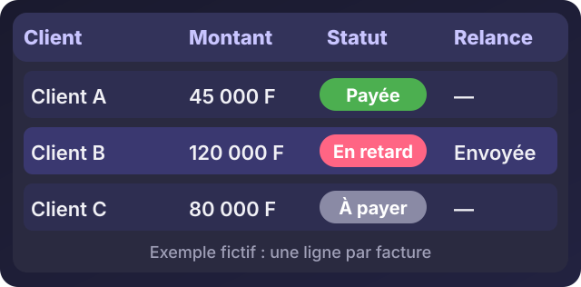

Relancer automatiquement les factures impayées avec Google Sheets
Écouter cet article · environ 4 min
Relancer les clients qui n'ont pas payé est utile, mais personne n'aime le faire, alors on le repousse. Ce tuto met en place un tableau qui le fait à votre place : chaque matin, il repère les factures en retard et envoie un rappel poli. Il faut un compte Google, un tableau, et dix minutes. Aucune connaissance en programmation n'est nécessaire : vous copiez le code.
Ce que vous allez obtenir
- Un tableau de suivi de vos factures.
- Un e-mail de rappel envoyé automatiquement quand une facture est en retard, puis répété tous les 7 jours tant qu'elle n'est pas payée.
- Un bouton « Relancer sur WhatsApp » dans chaque ligne, avec le message déjà écrit.
1. Préparer le tableau
Dans Google Sheets, créez un tableau, et renommez l'onglet en bas Factures. Écrivez ces en-têtes dans la première ligne, de la colonne A à la colonne H :
Client | Email | Téléphone | Montant | Échéance | Statut | Dernière relance | WhatsAppRemplissez ensuite une ligne par facture. Pour la colonne Statut, écrivez À payer ou Payée. Pour Échéance, saisissez une vraie date (jj/mm/aaaa). Pour Téléphone, écrivez les 10 chiffres sans espace (par exemple 0172527765).
Voici à quoi ressemble le tableau une fois rempli :

2. Ajouter le code
Dans le menu, cliquez sur Extensions > Apps Script. Effacez ce qui s'y trouve et collez :
const FEUILLE = 'Factures';
const JOURS_ENTRE_RELANCES = 7;
function relancerFactures() {
const feuille = SpreadsheetApp.getActiveSpreadsheet().getSheetByName(FEUILLE);
const lignes = feuille.getDataRange().getValues();
const aujourdhui = new Date();
aujourdhui.setHours(0, 0, 0, 0);
let envoyees = 0;
for (let i = 1; i < lignes.length; i++) {
const [client, email, , montant, echeance, statut, derniere] = lignes[i];
if (!email || statut === 'Payée') continue; // rien à relancer
if (!(echeance instanceof Date)) continue; // date invalide
if (echeance >= aujourdhui) continue; // pas encore en retard
if (derniere instanceof Date) {
const jours = (aujourdhui - derniere) / (1000 * 60 * 60 * 24);
if (jours < JOURS_ENTRE_RELANCES) continue; // relancé récemment
}
MailApp.sendEmail({
to: email,
subject: 'Rappel : facture en attente de règlement',
body: 'Bonjour ' + client + ',\n\n'
+ 'Sauf erreur de notre part, votre facture de ' + montant + ' FCFA, '
+ 'échue le ' + Utilities.formatDate(echeance, 'Africa/Abidjan', 'dd/MM/yyyy')
+ ', est toujours en attente de règlement.\n\n'
+ 'Si le paiement est déjà parti, merci de ne pas tenir compte de ce message.\n\n'
+ 'Cordialement'
});
feuille.getRange(i + 1, 7).setValue(new Date()); // colonne G : dernière relance
envoyees++;
}
Logger.log(envoyees + ' relance(s) envoyée(s)');
}Enregistrez (icône disquette). Avant le premier essai, mettez votre propre adresse e-mail dans la colonne Email d'une ligne de test, avec une échéance passée : vous recevrez le message vous-même, et aucun client ne recevra rien par erreur.
3. Autoriser et tester
Choisissez la fonction relancerFactures dans la liste en haut, puis cliquez sur Exécuter. Google demande l'autorisation d'envoyer des e-mails en votre nom : acceptez. Vérifiez votre boîte de réception, puis la colonne G de la ligne de test : la date du jour doit apparaître.
4. Le faire tourner tout seul
Ajoutez cette fonction sous la première, puis exécutez-la une seule fois :
function creerDeclencheur() {
ScriptApp.newTrigger('relancerFactures')
.timeBased()
.everyDays(1)
.atHour(8)
.create();
}Chaque jour, entre 8 h et 9 h, le tableau vérifie les factures et envoie les relances qui s'imposent. Pour l'arrêter, ouvrez le menu Déclencheurs (icône horloge) et supprimez-le.
5. Le bouton WhatsApp
Dans la cellule H2, collez cette formule, puis tirez-la vers le bas :
=IF(C2="";"";HYPERLINK("https://wa.me/225"&C2&"?text="&ENCODEURL("Bonjour "&A2&", sauf erreur de ma part, votre facture de "&D2&" FCFA est en attente de règlement. Merci !");"Relancer sur WhatsApp"))Un clic ouvre WhatsApp avec le message prêt : il ne reste qu'à l'envoyer. Si Sheets affiche une erreur, c'est souvent la langue du tableau : remplacez les ; par des ,, ou utilisez les noms français des fonctions (SI et LIEN_HYPERTEXTE à la place de IF et HYPERLINK).
Les limites à connaître
- Google limite le nombre d'e-mails envoyés par jour depuis un compte. Pour quelques dizaines de factures, c'est largement suffisant : consultez la page « Quotas Google Apps Script » avant de dépasser.
- Le message est poli et neutre. Pour une facture très en retard, appelez : aucun automatisme ne remplace une conversation.
- Un tableau n'est pas un logiciel de facturation. Si vous gérez beaucoup de clients, un outil sur mesure sera plus sûr.
Si vous voulez que je mette cela en place sur vos propres factures, avec votre papier à en-tête et votre ton, écrivez-moi.